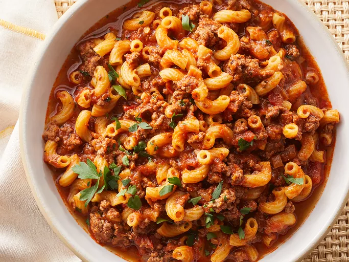

American Goulash Recipe

Americanized goulash with additional beef.
Ingredients
These are the ingredients you will need to make this recipe:
- 1 tablespoon of olive oil.
- 2 pounds of ground beef.
- 1 large diced onion.
- 4 cloves of minced garlic.
- 2 large bay leaves.
- 2 tablespoons of paprika.
- 2 teaspoons of Italian seasoning.
- 2 teaspoons of kosher salt.
- 1/2 teaspoon of ground black pepper.
- 1 pinch of cayenne pepper.
- 1 quart of chicken broth.
- 1 (24 ounce) jar of marinara sauce.
- 1 (15 ounce) can of diced tomatoes.
- 1 cup of water.
- 2 tablespoons of soy sauce.
- 2 cuos elbow macaroni.
- 1/4 cup chopped Italian parsley.
- 1 cup of shredded white cheddar cheese.
Steps
Follow these steps below to make this homemade chicken lasagna:
- Gather your ingredients.
-
Heat oil in a pot over medium-high heat. Add ground beef and onion then
cook and stir until beef is browned and crumbly and onion is translucent (about 5 minutes).
Continue to cook and stir until liquid is evaporated, 3 to 5 minutes.
Add garlic, bay leaves, paprika, Italian seasoning, salt, black pepper, and cayenne.
- Cook, stirring occasionally, until flavors come together, about 3 minutes.
Pour in broth, marinara sauce, and diced tomatoes.
Pour water into the sauce jar, swirl, and pour into the pot.
Stir in soy sauce; bring to a simmer.
Reduce the heat to medium and simmer until flavors intensify, about 30 minutes.
-
Increase the heat to medium-high and bring to a rapid simmer.
Stir in macaroni then cook, stirring occasionally, until just barely tender, about 12 minutes.
Check for doneness after 10 minutes.
-
Remove from the heat and discard bay leaves. Stir in Cheddar and parsley.
Cover and let rest for 5 minutes. Taste and season as desired.
Home